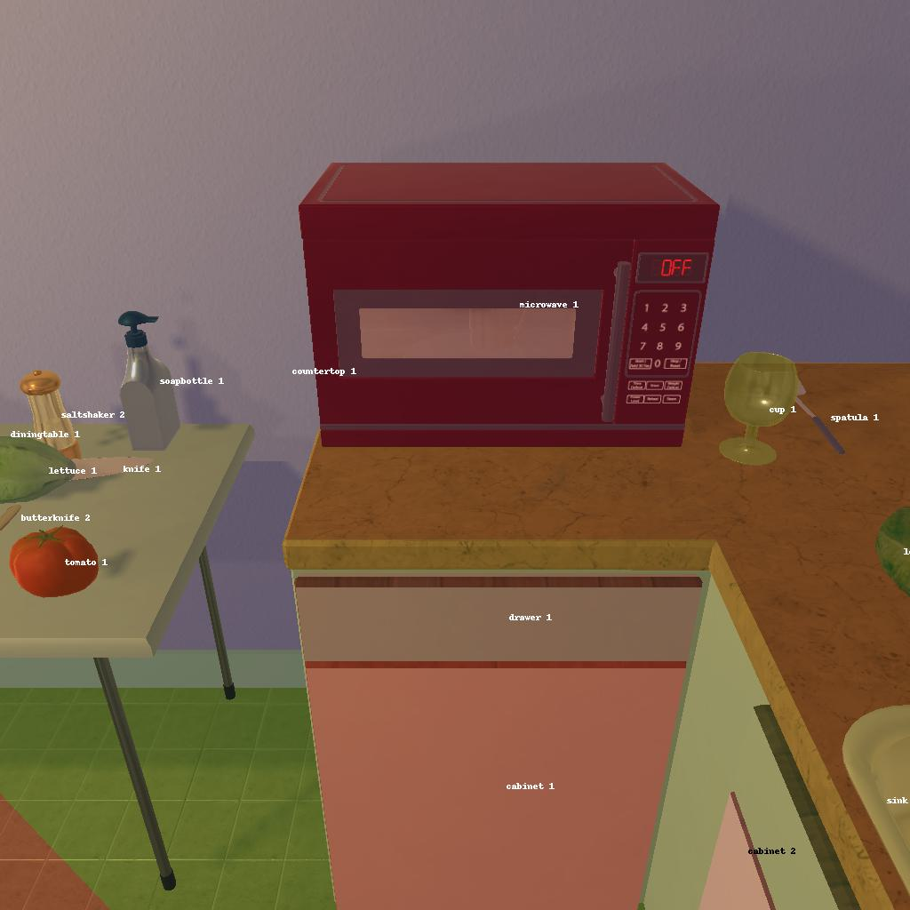

---------------------------------------------------------task: 14---------------------------------------------------------
--------------------------------------------------------------------------------------------------------------------------------------------------------------------
--------------------------------------------------------------------------------------------------------------------------------------------------------------------
Step:--------------------------------------------------------------------------11-------------------------------------------------------------------------------
----------------------------------------
VLM Prompt:
Image1:
**Instruction**
1. Analyze the provided image to identify all visible household objects, focusing on those relevant to the task description "cool some apple and put it in countertop."
2. Use the analysis of the image and the task hint "The agent must find an object of the desired type, pick it up, go to a fridge, cool the object with the fridge, then find the correct location to place it, and put it down there. The agent does not need to use the fridge button or open the fridge to cool the object, and the agent just needs to do action that is "cool the object with the fridge"." to answer the question: what is the most reasonable action in the choices for the task description "cool some apple and put it in countertop"?
4. Decide and write the answer using the template: The answer is: (i): , where i is the real number. If there is no desired object in the image, search every place based on **Initial Observation** to find the object. And if no one is exactly correct, choose a similar answer.
**Initial Observation**
You are in the middle of a room. Looking quickly around you, you can see microwave (1), countertop (1-2), cabinet (1-11), diningtable (1), drawer (1-3), sink (1), sinkbasin (1), toaster (1), stoveburner (1-4), fridge (1), coffeemachine (1), garbagecan (1)
**Answer Choices**
(1): go to microwave 1
(2): go to countertop 1
(3): go to diningtable 1
(4): go to drawer 1
(5): go to sink 1
(6): go to cabinet 2
(7): go to sinkbasin 1
(8): go to cabinet 4
(9): go to cabinet 5
(10): go to drawer 2
(11): go to countertop 2
(12): go to toaster 1
(13): go to cabinet 6
(14): go to stoveburner 1
(15): go to cabinet 7
(16): go to stoveburner 2
(17): go to stoveburner 3
(18): go to stoveburner 4
(19): go to drawer 3
(20): go to cabinet 8
(21): go to cabinet 9
(22): go to cabinet 10
(23): go to coffeemachine 1
(24): go to cabinet 11
(25): go to garbagecan 1
(26): open cabinet 1
(27): close cabinet 1
(28): examine cabinet 1
**Answer**
Let's think step by step by following the instructions.
----------------------------------------
----------------------------------------
Original Response:
The task is to cool some apple and put it in countertop. The image does not show any apple, so we need to search for it based on the Initial Observation. The Initial Observation mentions a fridge, which is typically where one would cool an item. Therefore, the most reasonable action would be to go to the fridge and search for the apple. However, the action choices do not include "go to fridge," but they do include various cabinets. It's common for apples to be stored in cabinets or on countertops in a kitchen setting.
Based on this, the most reasonable action from the given choices would be to check the cabinets since they are often used for storing fruits like apples. The first cabinet mentioned is cabinet 1, but there is an option to examine it, which could mean looking inside for the apple.
The answer is: (28): examine cabinet 1.
----------------------------------------
----------------------------------------
>>> Refine Original VLM Response and Get Pure Action: examine cabinet 1
----------------------------------------
-----------------------------------------------------------------
Running time: 14.460572481155396 seconds
Total Money: 4.697800000000002
-----------------------------------------------------------------
-----------------------------------------------------------------
Text Observation:On the cabinet 1, you see a cup 1, a soapbottle 1, a tomato 1, a lettuce 1, a saltshaker 2, a lettuce 2, a knife 1, a spatula 1, and a butterknife 2.
-----------------------------------------------------------------
UNSUCCEED